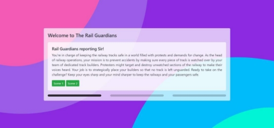
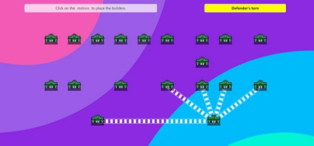
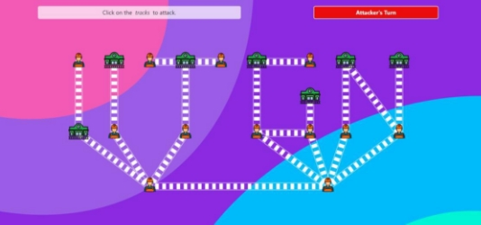
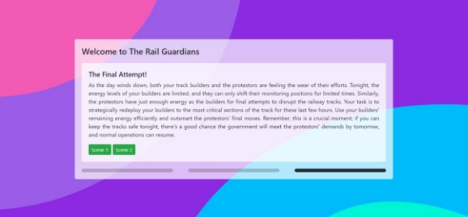
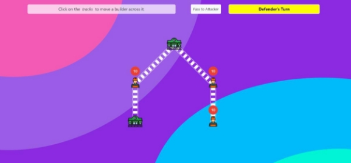
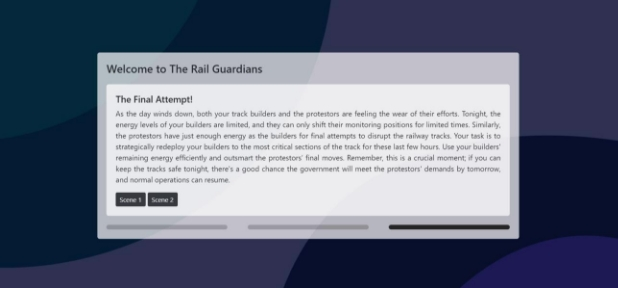
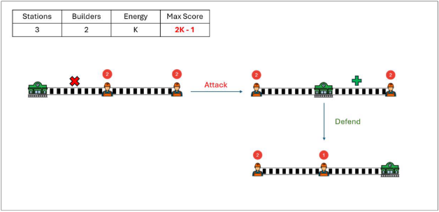
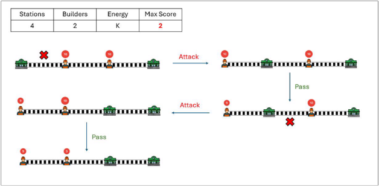
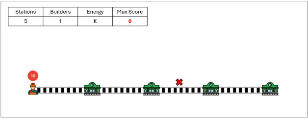
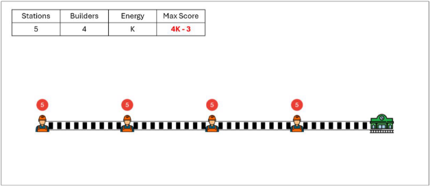

The Rail Guardians
Introduction
A vertex cover [1] is a set of vertices within a graph such that every edge in the graph has at least one endpoint in the vertex cover set. Mathematically, for a graph G(V, E), as set S ⊆ V(G) is said to be a vertex cover of G if for any (u, v) ∈ E(G) either u ∈ S or v ∈ S. The size of the smallest vertex cover of graph G is called the minimum vertex cover of G, denoted by mvc(G). Figure 1 shows a simple cycle graph G’ of 4 vertices with mvc(G’) = 2.

Figure 1 – A cycle graph G’ with 4 vertices; mvc (G’) = 2.
The dynamic variant of the vertex cover problem involves a game scenario where guards are positioned on certain vertices of a graph by the defender [2]. The attacker plays by selecting and attacking an edge, challenging the defender to respond by moving the guards along the graph’s edges. The defender’s goal is to ensure that at least one guard moves along the attacked edge in response to each attack. If the defender is unable to make such a move,
the attacker wins. Conversely, if the defender can successfully defend against an infinite sequence of attacks, the defender wins. Figure 2 describes the possible scenarios of the gameplay. If both ends of the attacked edge are unguarded then the attacker wins. If only one end of the attacked edge is guarded, then that guard must move across the attacked edge to counter the attack. If both ends of the attacked edge are guarded, then the two guards swap their positions.

Figure 2 - Possible scenarios of the gameplay. Red vertices are guarded, and greens are unguarded.
The minimum number of guards required for the defender to maintain a winning strategy is called the eternal vertex cover number of the graph, denoted as evc(G).
The walkthrough of the eternal vertex for a cyclic graph with 4 vertex is given in Figure 3.

Figure 3 - Walkthrough of Eternal vertex cover. Red vertices are guarded, and greens are unguarded.
Background
The problem of Eternal Vertex Cover was introduced by Klostermeyer and Mynhardt in 2009 [2]. Klostermeyer et al. concluded that mvc(G) ≤ evc(G) ≤ 2mvc(G). Following that many works have studied EVC in greater detail. Calamoneri et al. [3] studies the Eternal Vertex Cover problem on infinite and finite grid graphs, offering insights into the transition between these two graph types. Babu, et al. [4] investigates graphs with a minimal Eternal Vertex Cover number, focusing on those with unique properties that allow for a smaller number of guards. Fomin et al. explored the complexity of the problem and concluded that the problem is NP-Hard, yet has a polynomial time 2-approximation algorithm [5]. Babu et al. also explored the graphs whose eternal vertex cover number and vertex cover number coincide [4]. Babu et al. also concluded that the problem does not admit a polynomial compression even on bipartite graphs of diameter six [6].
The Rail Guardians
The Rail Guardians is my interpretation of the Eternal Vertex Cover Problem, reimagined as a captivating two-player web-based game with an interesting storyline and across three different variants (modes).
The Storyline – The game is set in an imaginary world and the storyline goes as follows.
You’re in charge of keeping the railway tracks safe in a world filled with protests and demands for change. As the head of railway operations, your mission is to prevent accidents by making sure every piece of track is watched over by your team of dedicated track builders. Protesters might target and destroy unwatched sections of the railway to make their voices heard. Your job is to strategically place your builders so that no track is left unguarded. Ready to take on the challenge? Keep your eyes sharp and your mind sharper to keep the railways and your passengers safe.
Mode 1 – Rail Guardians reporting Sir!
This mode is the implementation of generic eternal vertex cover [2]. The game starts with the defender placing the builders on the graph. The attacker then tries to attack the tracks. With
N builders on boards, in defender’s next move, defender can update the position of the builders (excluding the one builder who had to walk across the attacked track). Each builder
can at most move across one track. The attacker wins if an unguarded track is attacked. Defender wins if all tracks are guarded till the selected number of rounds.

Figure 4 - Mode 1 home.

Figure 5 - Mode 1 start menu.

Figure 6 - Mode 1 gameplay.
Mode 2 – The Challenge has Escalated!
Storyline - Protestors have managed to steal the railway track map, making it impossible for you to monitor the tracks through your usual systems. Now, the only way to keep track of the network is through reports from your field builders. In this level, you’ll need to rely on your memory and strategic planning skills. Your builders will relay information about sections of the track as they survey them, but once communication ends, you won’t have a visual map to refer back to. You must memorize and visualize the track layout based on their reports. Can you keep the railways safe using only the details you hold in your mind? Let’s find out in this thrilling new challenge!
In this mode, the game starts with the defender placing the builders on the graph. But there is a catch! The graph is not visible to the defender altogether. Rather only a part of the graph is visible to the defender at an instance. Hovering over each station gives the defender intel of the tracks connected to that station. Once the guards are placed, the gameplay continues as the previous mode.

Figure 7 - Mode 2 home

Figure 8 - Mode 2 start menu.

Figure 9 - Mode 2 gameplay: hover action.

Figure 10 - Mode 2 gameplay: attacker’s move.
Mode 3 – The Final Attempt!
Storyline - As the day winds down, both your track builders and the protestors are feeling the wear of their efforts. Tonight, the energy levels of your builders are limited, and they can only shift their monitoring positions for limited times. Similarly, the protestors have just enough energy as the builders for final attempts to disrupt the railway tracks. Your task is to strategically redeploy your builders to the most critical sections of the track for these last few hours. Use your builders’ remaining energy efficiently and outsmart the protestors’ final moves. Remember, this is a crucial moment; if you can keep the tracks safe tonight, there’s a good chance the government will meet the protestors’ demands by tomorrow, and normal operations can resume.
In this mode, the game starts with the defender placing the builders on the graph. But now, each builder has a certain amount of energy associated with it. Whenever a builder is moved by the defender, the energy of the builder decreases by 1. When the defender passes the turn to the attacker without making a move, the builder with the max energy loses 1 energy. The game ends when the energy of any builder reaches 0, or when the attacker attacks an unguarded track. The number of rounds the defender has guarded the track is the score of the defender. The aim is to get the highest score!

Figure 11 - Mode 3 home.

Figure 12 - Mode 3 start menu.

Figure 13 - Mode 3 gameplay.
Dark Mode – The game features a dark mode to accommodate users who prefer a darker theme or play in low-light environments, reducing eye strain and providing a visually comfortable experience.

Figure 14 - Dark mode: home.

Figure 15 - Dark mode: start menu.

Figure 16 - Dark mode: gameplay.
Implementation – The implementation uses only HTML, CSS, and vanilla JavaScript without any third-party libraries. This minimalistic approach ensures a lightweight experience.
Analysis of Max Score for Energy Aware EVC on Linear Paths
In Energy Aware Eternal Vertex Cover (Mode 3 of the game), each guard has a limited amount
of energy, and the game ends if any guard’s energy reaches zero. Analyzing the maximum achievable score in this mode can help by revealing optimal guard movement strategies and energy management. By understanding the maximum score, players can develop tactics
that balance defense and energy conservation, thereby extending gameplay and achieving better results. This analysis can guide game design improvements, leading to a more engaging and challenging experience for players.
I have performed some basic analysis of the maximum score achievable by the defender where each guard has energy K, and K is numerically big!
Table 1 summarizes my analysis across paths of size 2 to 5, and different number of builders.
Table 1 - Analysis of Max Score for Energy Aware Eternal Vertex Cover on Linear Graphs / Paths
| Stations | Builders | Energy | Max Score |
|---|---|---|---|
| 2 | 1 | K | K |
| 3 | 1 | K | 1 |
| 3 | 2 | K | 2K – 1 |
| 4 | 1 | K | 0 |
| 4 | 2 | K | 2 |
| 4 | 3 | K | 3K – 2 |
| 5 | 1 | K | 0 |
| 5 | 2 | K | 1 |
| 5 | 3 | K | 3 |
| 5 | 4 | K | 4K – 3 |
Analysis of optimum placement of builders to achieve the maximum score










Conclusion
In conclusion, my final course project centered on implementing the Eternal Vertex Cover as a two-player UI based game through a process of planning, coding, and debugging. Alongside the core implementation, I also integrated additional modes and features to make the game engaging and enhance the gameplay. The project was a great experience for me, and the lessons I learned while building it helped me understand the intricacies of game development, problem-solving, and user interface design.
I am deeply encouraged to work more on the problem statement. Also, I look forward to use meta-heuristics and genetic algorithms to compute the maximum achievable score in Energy Aware Eternal Vertex Cover.
Acknowledgements
I express my gratitude to Prof. Neeldhara Misra, Prof. Jyothi Krishnan, and Saraswati Girish Nanoti for their constant guidance and encouragement. I thank Sakshi for helping me with the beautiful storyline.
References
- “Vertex cover,” Wikipedia. Mar. 01, 2024. Accessed: Apr. 26, 2024. [Online]. Available: https://en.wikipedia.org/w/index.php?title=Vertex_cover&oldid=1211245782
- W. F. Klostermeyer and C. M. Mynhardt, “Edge protection in graphs”.
- T. Calamoneri and F. Corò, “(Eternal) Vertex Cover Number of Infinite and Finite Grid Graphs.” arXiv, Sep. 12, 2022. doi: 10.48550/arXiv.2209.05102.
- J. Babu, L. S. Chandran, M. Francis, V. Prabhakaran, D. Rajendraprasad, and J. N. Warrier, “On Graphs with Minimal Eternal Vertex Cover Number,” in Algorithms and Discrete Applied Mathematics, S. P. Pal and A. Vijayakumar, Eds., Cham: Springer International Publishing, 2019, pp. 263–273. doi: 10.1007/978-3-030-11509-8_22.
- F. V. Fomin, S. Gaspers, P. A. Golovach, D. Kratsch, and S. Saurabh, “Parameterized algorithm for eternal vertex cover,” Inf. Process. Lett., vol. 110, no. 16, pp. 702–706, Jul. 2010, doi: 10.1016/j.ipl.2010.05.029.
- J. Babu, N. Misra, and S. G. Nanoti, “Eternal Vertex Cover on Bipartite Graphs,” in Computer Science – Theory and Applications, A. S. Kulikov and S. Raskhodnikova, Eds., Cham: Springer International Publishing, 2022, pp. 64–76. doi: 10.1007/978-3-031- 09574-0_5.